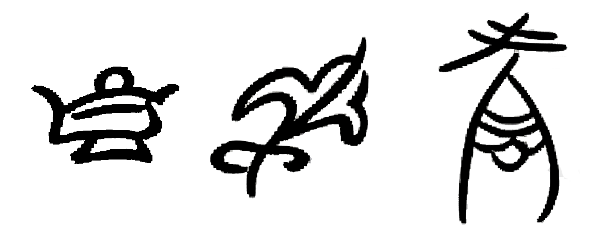
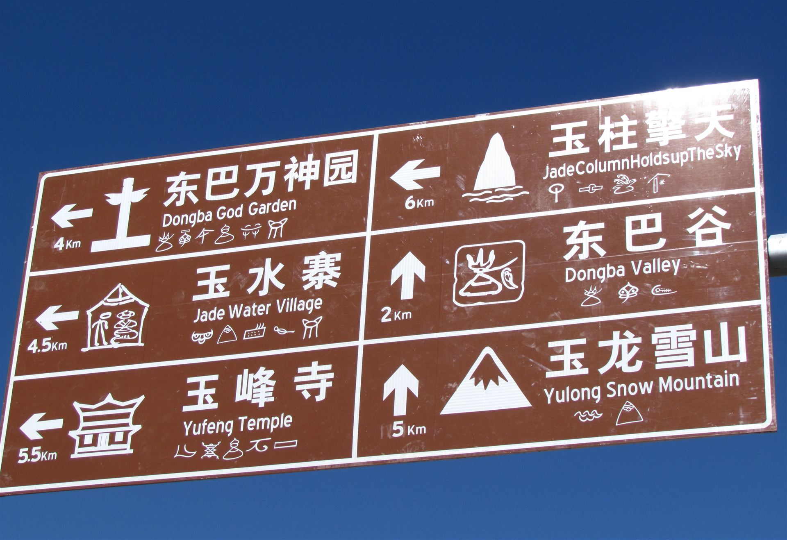

字形 Wikimedia Commons
13 个单字出自 Commons「Dongba symbols」开放系列，作者 Immanuel Giel（其中「闪电」为 Aromatic 上传、公有领域）；两幅雪山名作者 Zhangmoon618；路牌照片作者 6-A04-W96-K38-S41-V38。除标注 CC0 / 公有领域者外，其余为 CC BY-SA 4.0，本页逐图署名并附原词条链接（见大图弹层）。
Dongba Glyphs · 互动识字
东巴文，纳西语称「森究」（木上的痕迹）、「鲁究」（石上的痕迹），是至今仍在宗教仪式中使用的活形态象形文字，2003 年随东巴古籍入选联合国教科文组织《世界记忆名录》。本页收录 13 个经核实的常用字——字形与释义均来自开放授权的公开来源，逐图署名，可放心放大细看。
点卡片看大图与出处；卡片上的小喇叭朗读普通话释义。
抽象概念画不出图，东巴就借同音的字代写——如同汉字的假借。以下三例均出自英文维基百科 Dongba symbols 词条（CC BY-SA）：

两幅字均由维基贡献者 Zhangmoon618 从出版物与碑刻临摹上传。对比着看：同一座雪山，笔画比字谱里的单字更「手写」——东巴文从来不是印刷体，每个东巴笔下都有自己的山。


十道题，每题一个字、四个义项。猜完不算完——去上面的字谱里翻翻它的「亲戚」。